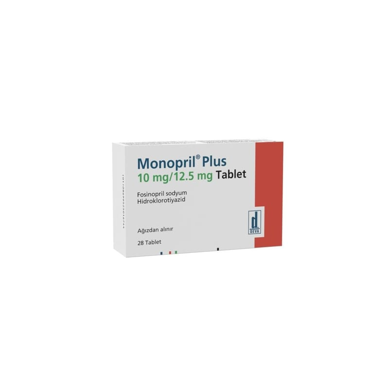

Monopril Plus 10 mg/12.5 mg Tablet, 28 Adet

Ne için kullanılır
KT · Bölüm 1 MONOPRİL PLUS Anjiotensin Dönüştürücü Enzim (ADE) inhibitörleri ve diüretik kombinasyonları olarak adlandırılan bir ilaç grubuna aittir ve fosinopril ve hidroklorotiyazid olmak üzere iki ayrı etkin madde içermektedir. Fosinopril ADE inhibitörü ilaç grubuna dahildir. ADE inhibitörleri vücuttaki kan damarlarını genişleterek etki ederler. Bu şekilde damarlardaki basınç azalmaktadır. Hidroklorotiyazid ise tiyazid diüretikleri adı verilen ilaç grubuna dahildir. Diüretikler vücuttan fazla sıvının atılmasına yardımcı olurlar ve kan basıncı yüksek olan hastalarda kullanılır. Bu grup ilaçlar suyu atıcı etkiye sahip olduklarından diüretikler sıklıkla “idrar söktürücü” olarak adlandırılır. MONOPRİL PLUS tabletlerin her biri etkin madde olarak 10 mg fosinopril sodyum ve 12,5 mg hidroklorotiyazid içeren yuvarlak, bikonveks, bir yüzünde “DEVA MP 10” yazılı, şeftali rengi tabletler şeklindedir.
MONOPRİL PLUS, 28 tabletlik formları ile kullanıma sunulmaktadır. MONOPRİL PLUS, yüksek tansiyon tedavisinde kullanılır.